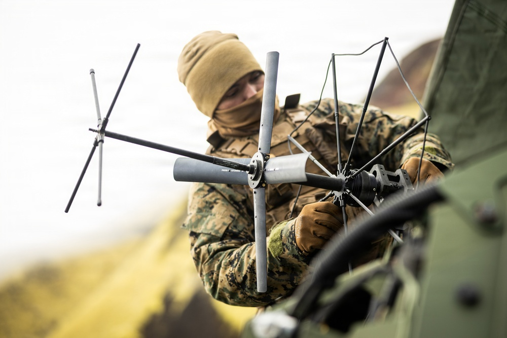

U.S. Marine Corps photo by Sgt. Noah Masog · DVIDS 9899710 · Public domain · Radio operator sets communications gear on Jan Mayen during Atlantic City 26, Aug. 30, 2026.
USNI News
Navy and Marines put long-range fires in Norway for Arctic drills
USNI News, Thursday: sailors and Marines deployed the Navy’s containerized long-range launcher and Strike Master coastal-defense system to Norway for Operation Atlantic City 26 and NATO’s Arctic Sentry. The systems are meant to prove expeditionary fires in the High North.
USNI News · Read source →